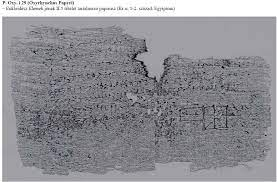

Ókori görög irodalom név alatt tartják számon az ókor (hagyományosan Kr. e. 3000 körül – Kr. u. 476) során a mai Görögország, illetve az azon kívül eső területeken ógörög nyelven keletkezett irodalmi alkotások (szépirodalmi, irodalomtudományi, nyelvészeti, történeti, filozófiai, földrajzi, matematikai, csillagászati, orvostudományi, és szónoki művek) összességét. A legkorábbra datálható ezen fennmaradt alkotások közül jelenlegi ismereteink szerint Homérosz Iliasz-a és Odüsszeiá-ja (Kr. e. 8. század), míg legkésőbbi képviselői értelemszerűen az ókor végi (Kr. u. 5. század) nagyszámú görög nyelvű alkotások. A ókori görög irodalom szerves folytatása a középkori görög irodalom, melyről a bizánci irodalom szócikkben lehet olvasni. Ugyancsak külön szócikk tárgyalja az ókori görög irodalommal párhuzamosan fejlődő, több tekintetben annak hatása alatt álló római irodalmat.
Görög eposzok
Homérosz Az görög irodalom jelenleg ismert legkorábbi alkotásának valószínűleg a félig-meddig mitikus Homérosz (Kr. e. VIII. sz.) két eposza, az trójai háborút elbeszélő Iliasz, illetve folytatása, az Odüsszeia tekinthető. (Egyes újabb nézetek szerint a két mű nem egy író alkotása.) Nem sokkal később keletkezhettek a kezdetben – és már az ókori irodalomtörténészek szerint valószínűleg tévesen – szintén Homérosznak tulajdonított, és napjainkra rövid idézetektől eltekintve elveszett egyéb régi eposzok (pl. Titanomakhia, Oidipodeia, Thébaisz, Epigonoi, Küpria, Aithiopisz, Kis Iliasz, Iliuperszisz, Nosztoi, Télegonia). Homérosznak himnuszokat is tulajdonítottak (Apollón-, Hermész-, Aphrodité-, Démétér-himnusz). Bizonytalan szerzőségű a Békaegérharc (gör. Batrakhomüomakhia) című, Iliászt utánzó komikus kiseposz.

Görög Költészet
Aratosz (Kr. e. 315–240) Pán-himnusza mellett egy csillagászati tankölteményt szerzett (Phainomena ['Égi jelenségek']). Nikandrosztól (Kr. e. 197–130) a Thériakát ('Állatokkal kapcsolatos tanácsok') és az Alexipharmakát ('A mérgek ellenszerei') ismerjük. Hermészianax (Kr. e. 340–?) három könyvnyi elégiája elveszett, a tudós Kallimakhosz (Kr. e. 310–235) a Hekalé című kiseposza, 6 himnusza és 63 epigrammája viszont megőrződött. Euphorión (Kr. e. 275–200) Arai é Potériokleptészéből ('Átok vagy a kehelytolvaj') és Thraxából ('A thrák') részleteket ismerünk. Theokritosznak (Kr. e. 310–245) pásztori költeményei (Idillek), epigrammái, és epikus versei (Gyermek Héraklész, Hülasz) maradtak fenn. Herodasznak (Kr. e. III. sz.) csak a 19. század végén találták meg 7 mimusát egy papiruszleletben. Szótadész (Kr. e. III. sz.) verseiből töredékeket ismerünk csupán.